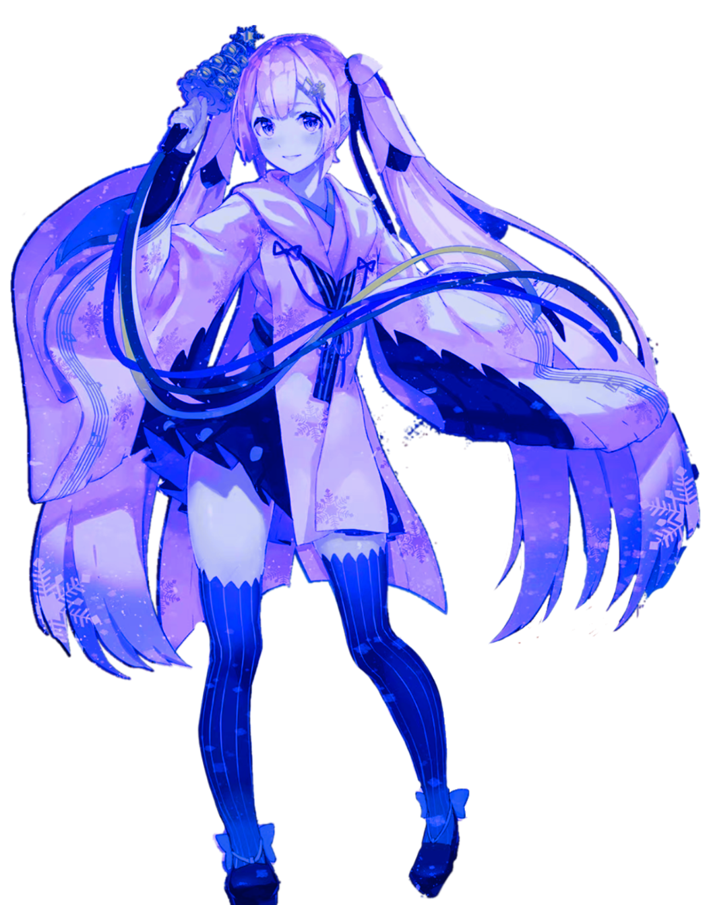

Homepage and Official Redirection 首页/官网
MagicalMirai魔法未来
SnowMiku/雪未来
Producers P主
Hall of Myths神话曲
冷知识：点击主视觉图片有小惊喜哦owo
FunFact: Click on the main visual picture for some surprise owo
雪未来演唱会最大的特点就是每年的服装都是经过piapro服装征集所投选出来的！每年都会在piapro.jp上公开发布今年的雪未来主题，粉丝们需要根据官方提供的三视图和主题进行自己的创作，在规定时间内投稿至piapro内的活动专区就可以参加活动了！一般来说每年的竞争都非常的激烈。。！会有很多的参赛者参加， 所以做好激烈比赛的准备吧。。。。。（口哇。。）
The most significant of Snow Miku concert is that the costume designs are selected by piapro costume collection contest that is hosted every year! Every year's snow future theme will be published on Piapro.jp, the 2023 theme for SM are clouds in Hokkaido. Artists need to draw their own creation and design according to the theme provided by the official, and submit to the “activities” page within the specified time to participate in the contest!
如果想要参加雪未来的服装征集需要注意一些事情！要记得投稿时间是日本时间，在piapro.jp上可以具体到几分几秒到截止日期。其次如果要投稿的话需要准备日语的注解和一定程度对设计的解释和说明，建议大家投稿日期尽量提前，这样可以有时间来准备宣传和给周围葱葱人打一下广告。在piapro上投票有点复杂，如果想让亲友团来支持可能会有点麻烦（。。）需要用邮箱注册账号后再填写个人信息，而且网站只支持日语（啊！）。当然如果是中国人的话问题不会那么大，毕竟很多信息也有汉字来呈现所以不会那么痛苦！
If you want to participate in the Snow Miku costume collection contest you might need to pay attention to these following ! Keep in mind that the submission time is based on the Japanese time, and you can see the specified minutes and seconds to the deadline on Piapro.jp. Secondly, if you want to attend this contest, you need to prepare annotations in Japanese and a certain degree of explanation and explanation of the design in Japanese. It will be best to submit your submission as early as possible, so that you can have time to prepare for publicity and advertising to everyone.